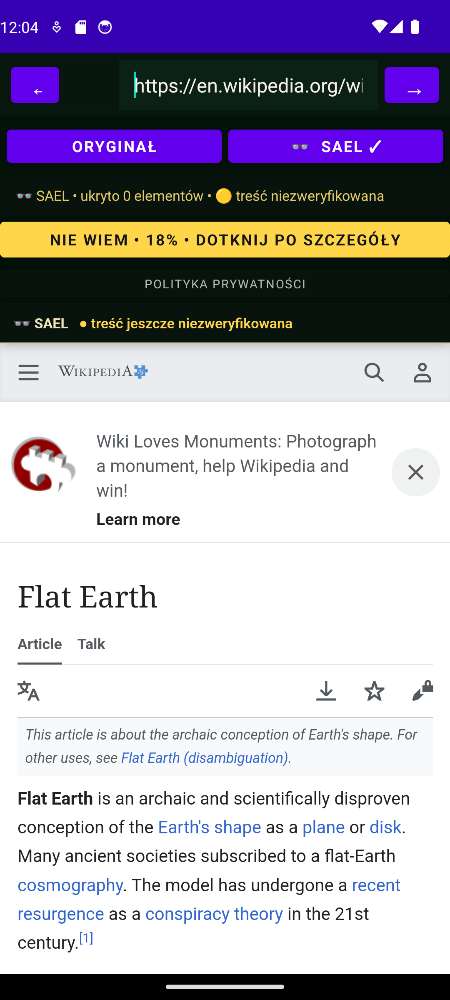
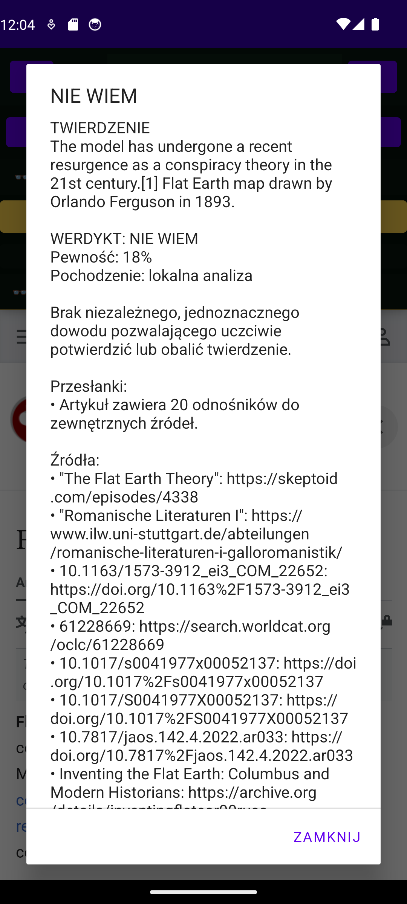

Android
Podpisana aplikacja z WebView, trybem SAEL, FactEngine i połączeniem z Evidence Backend.
SaelBrowser pomaga czytać strony bez zbędnych przeszkód i ostrożnie analizuje twierdzenia. Wersja Android działa już dziś, a wersja Windows jest przygotowywana.

Android jest aktualną, przetestowaną implementacją. Windows pozostaje osobną wersją rozwijaną na przyszłość.
Podpisana aplikacja z WebView, trybem SAEL, FactEngine i połączeniem z Evidence Backend.
Planowana wersja desktopowa. Instalator .exe lub .msi nie jest jeszcze dostępny.
Każdy element poniżej istnieje w aktualnym kodzie i został sprawdzony w testach lub pełnym E2E.
Przełączanie między stroną źródłową a czytelniejszym widokiem bez zbędnego przeładowania.
Pasek adresu, wyszukiwanie, wstecz, dalej oraz komunikaty błędów ładowania.
Ostrożne reguły dla typowych reklam i popupów, także dodawanych dynamicznie.
Główna treść z pominięciem menu, stopek, komentarzy i nawigacji.
Sygnały sensacyjności są oceniane, ale nigdy automatycznie nie oznaczają fałszu.
Twierdzenia, niezależność źródeł, daty, confidence i bezpieczny próg werdyktu.
Zrzuty pochodzą z podpisanego APK 0.1.0 uruchomionego na emulatorze Android.

Publiczne pliki będą wersjonowane w GitHub Releases i opatrzone sumą SHA-256. Żaden instalator nie jest kopiowany ręcznie do Pages.
Podpisany Android APK i AAB przeszły build, testy, lint oraz E2E. Publiczny GitHub Release nie został jeszcze utworzony.
Android — GitHub ReleasesWersja desktopowa jest rozwijana. Instalator .exe lub .msi pojawi się tutaj dopiero po zbudowaniu, podpisaniu i przetestowaniu.